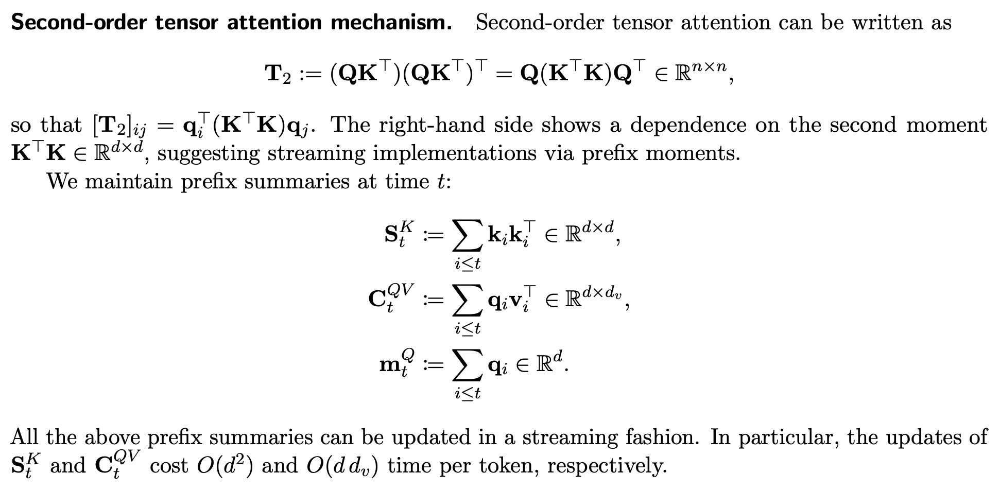

Figure: Prefix summaries $S^K$, $C^{QV}$, and $m^Q$ (plus masked cross‑summaries) enable streaming updates.Prefix summaries (per head)
S_t^K = \sum_{i \le t} \bm{k}_i \bm{k}_i^\top \in \mathbb{R}^{d \times d}
C_t^{QV}= \sum_{i \le t} \bm{q}_i \bm{v}_i^\top \in \mathbb{R}^{d \times d_v}
M_t^Q = \sum_{i \le t} \bm{q}_i \in \mathbb{R}^dDefault (unnormalized) output
$$\mathbf{o}_t \;=\; \bm{q}_t^\top S_t^K C_t^{QV}.$$
Auxiliary normalized variant
$$\mathbf{o}_t \;=\; \frac{\bm{q}_t^\top S_t^K C_t^{QV}}{\bm{q}_t^\top S_t^K m_t^Q + \varepsilon}.$$
When $S_t^K=\mathbf{I}$ the normalized form reduces to a linear‑attention kernel with $K(\bm{q}_t,\bm{q}_i)=\bm{q}_t^\top\bm{q}_i$. In general, $S_t^K=\sum_{i\le t}\bm{k}_i\bm{k}_i^\top$ induces a data‑adaptive second‑order metric on query space, strictly enriching first‑order mechanisms while retaining streaming updates.